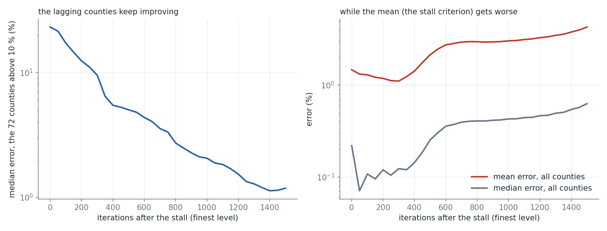

The stall rule judges progress by the mean and the maximum error over all regions. At the stall of the finest county level, the 72 counties above 10 % error continue to improve for another 1,400 iterations (their median error falls from 23 % to 1.2 %, the number above 10 % from 72 to about 27), while the mean error over all counties first falls to 1.1 % and then rises above 4 %. The two aggregates cannot see the progress of a small lagging group.
StallMonitor records, for every cycle of 10 iterations, the minimum of the mean-error ratio and of the max-error ratio. A cycle is progress if one of the two is still above 1 and has fallen by at least min_efficiency times the distance moved. The mean is taken over all regions and the max over a single region, so a small group of lagging regions can make steady progress without either moving: the mean is dominated by the regions that are already close, and the max is held by the single worst region, which can be stuck while the others improve.
continue_past_stall.py runs the baseline ladder (the finest level stalls after 170 iterations with 72 counties above 10 %), then continues the finest grid for 1,500 iterations with the stall rule off, taking a snapshot every 50 iterations.
| iterations after the stall | counties above 10 % | median error of the 72 | mean error, all | median error, all | p95 | invalid polygons |
|---|---|---|---|---|---|---|
| 0 | 72 | 23.2 % | 1.47 % | 0.22 % | 2.6 % | 57 |
| 150 | 61 | 14.5 % | 1.22 % | 0.096 % | 1.2 % | 68 |
| 300 | 39 | 9.5 % | 1.11 % | 0.12 % | 0.7 % | 74 |
| 450 | 32 | 5.3 % | 1.75 % | 0.19 % | 0.6 % | 74 |
| 600 | 29 | 4.4 % | 2.74 % | 0.36 % | 0.6 % | 81 |
| 900 | 26 | 2.3 % | 2.95 % | 0.42 % | 0.5 % | 88 |
| 1,500 | 27 | 1.2 % | 4.27 % | 0.63 % | 0.7 % | 100 |
The concern is confirmed in the first half of the run: progress of the lagging regions is invisible or weak in the mean and max ratios, and the stall can end the run while many regions are still improving. The second half shows the cost of running on: the bulk and some outliers degrade. A progress measure aimed at the lagging regions has to be combined with a returned iterate that is chosen with the same measure, and probably with a check that regions already within tolerance do not leave it.
Candidate measures, not tested here: the count of regions above max_tol and the median (or a high quantile) of the ratio among them; the sum of the log ratios over the regions above tolerance, which weights each lagging region equally and is not dominated by one outlier; progress if the count falls or the median ratio among the unsatisfied falls.

Left: median error of the 72 counties that were above 10 % at the stall, against the iterations after it (23 % to 1.2 %). Right: the mean and the median error of all counties over the same iterations.